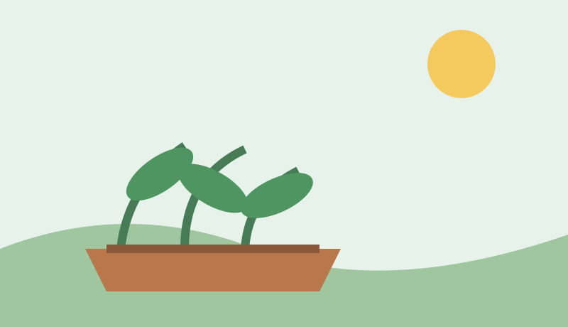
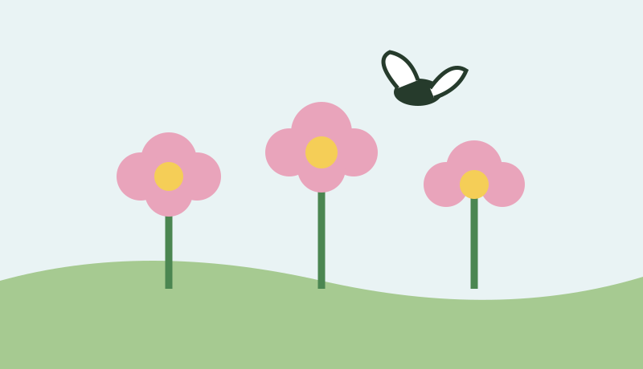
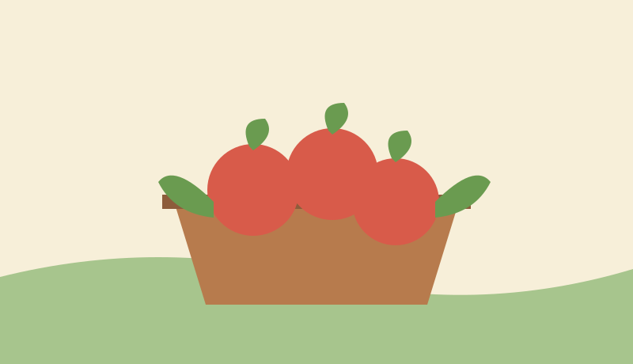
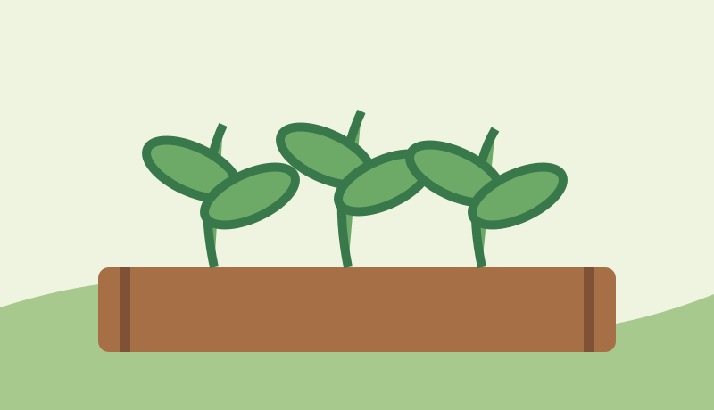
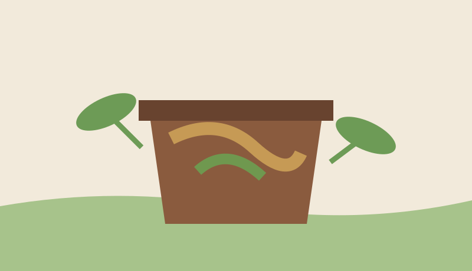
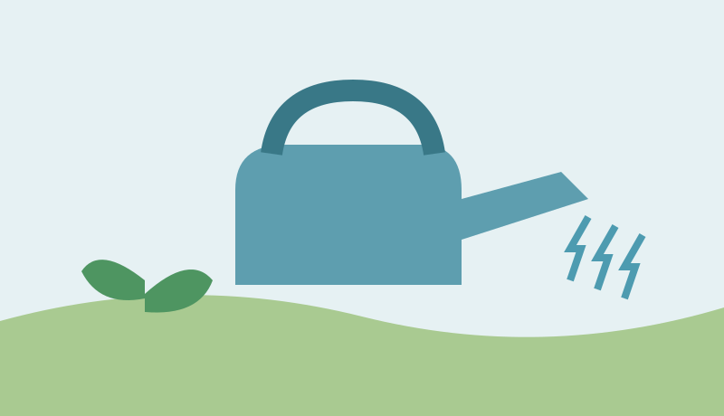

Starting seeds
Plant seeds in small pots and see which ones start growing.
Details
We add soil, water the seeds, and check them every few days.
We look after a small garden on campus. Anyone can join, even if they have never grown anything before.

We start plants from seeds and watch them grow.

Flowers give bees and other insects a place to visit.

At the end of the season, we pick what we have grown.
Plant seeds in small pots and see which ones start growing.
We add soil, water the seeds, and check them every few days.

Grow herbs like basil and mint in the garden beds.
We water the herbs and trim them when they get too big.
Plant flowers that can attract bees and butterflies.
We try different flowers and see which ones grow well in our space.

Learn how old leaves and food scraps can be used in compost.
Compost can be added to soil to help plants grow.

Help water the plants and keep the garden in good shape.
We check the soil first so we do not water more than needed.
Pick vegetables when they are ready and share the harvest.
We check each plant and only pick the vegetables that are ready.